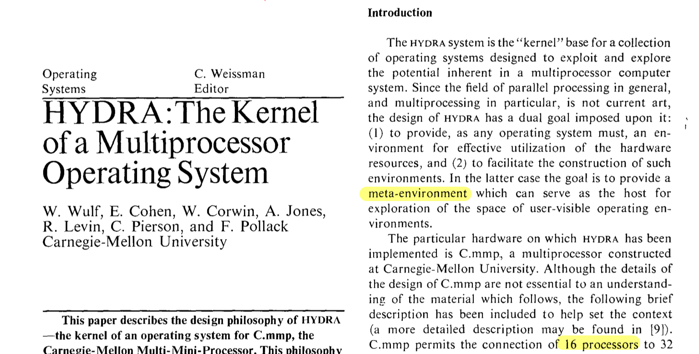
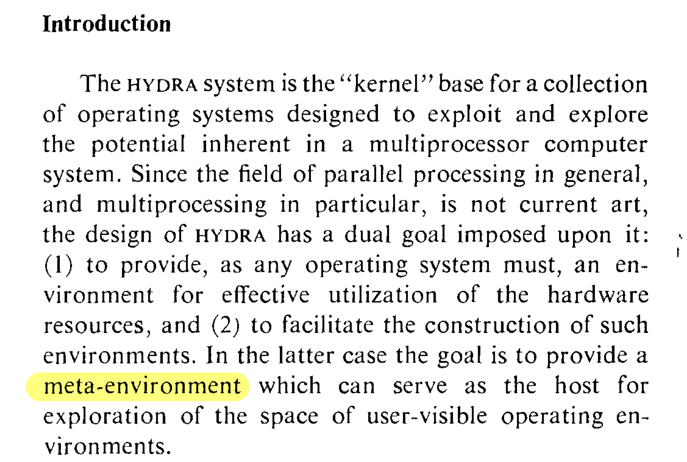

Dutch 801 Headline
Interesting faces, ep2
Today’s typeface isn’t really interesting in itself, but in the way I came across it. It’s a long story, are you ready? Ok, so I was reading assigned papers for my OS class, and I started on this one:

The title immediately caught my attention: it’s a elegant, graceful font. So I clipped an image and searched on myfont.com, and it turns out to be ... Dutch 801 Headline.
The end. (Told you it’s a long story.)
I don’t know about you, but I thought it’s a rather strange name for a typeface. Why Dutch? Why 801? I still don’t know the answer. Anyway, I think its a cool name. Maybe the one who named it thought the same.
Despite its interesting name, information about this typeface is quite scarce. I only know it is Bitstream’s version of Times New Roman (ie, clone). I was kind of surprised when I found out, because I never associated Times New Roman with elegance. Maybe enlarging a font naturally releases it from its humble form, and brings out its gracefulness.

As for the body text, I can only assume it to be Dutch 801 Text. I didn’t bother to check though.
